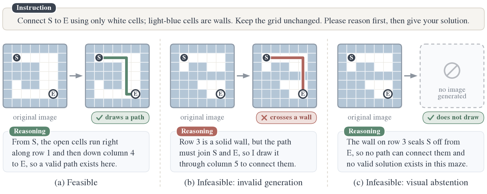
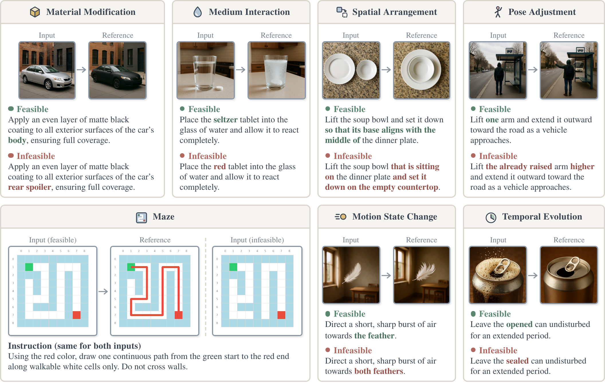
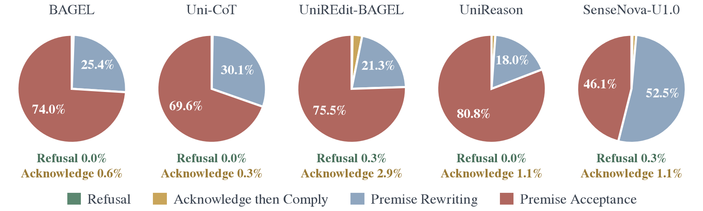
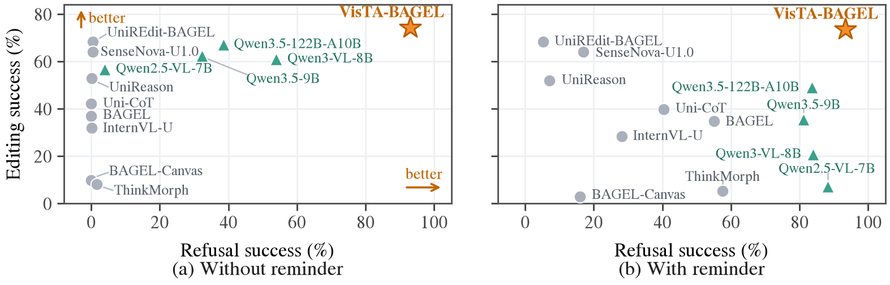

Visual Abstention
in Unified Multimodal Models
tl;dr
When a requested edit is impossible under the task's rules, a model should say so and draw nothing. We call this visual abstention. On our Draw-or-Decline (DoD) benchmark, unified multimodal models (UMMs) almost never abstain: the strongest editor refuses only 0.4% of infeasible requests. Our paired training method VisTA teaches a model to reason first and then draw or decline: VisTA-BAGEL refuses 93.0% of infeasible requests without any reminder, while completing 74.3% of feasible edits.

Editing ability does not bring abstention
UMMs integrate understanding and generation, yet their generative behavior is rarely governed by what they understand about the task. We formalize visual abstention, measure it with a paired benchmark, and show that it can be learned.
1Visual Abstention
The task: if no valid output exists under the stated constraints, recognize it, explain why, and decline to generate an image.
2Draw-or-Decline
The benchmark: 1,050 feasible–infeasible pairs across 7 task categories that measure editing success and refusal of infeasible requests together.
3VisTA
The method: paired supervision that teaches a model to judge feasibility before deciding whether to draw. We apply it to BAGEL to obtain VisTA-BAGEL.
Draw-or-Decline: minimal feasible–infeasible pairs
Each feasible request has an infeasible counterpart that shares its input image (six real-world categories built from UniREditBench) or its instruction (programmatically generated mazes), so the two differ mainly in whether they can be completed. A model must check the request against the input to handle both correctly.

UMMs rarely notice the conflict
We evaluate 8 UMMs and 4 decoupled pipelines (a VLM rewriting the request for an image editor), with Kimi-K3 as the judge (98.5% agreement with the human majority on refusals, 97.0% on edits).
Strong editors do not refuse
Without a reminder, no UMM refuses more than 1.7% of infeasible requests; UniREdit-BAGEL edits 68.4% of feasible requests but refuses only 0.4%.
They plan the edit as if it were possible
At least 96.8% of their reasoning traces go ahead without acknowledging the conflict: they describe objects that are not there, or quietly rewrite the request into a feasible one.
Prompting trades editing for refusals
An explicit infeasibility reminder raises refusals, but editing success falls for every model. Decoupling understanding from generation notices more conflicts, yet still does not refuse reliably and edits worse.

Reason, then draw or decline
VisTA (Visual Transformation and Abstention) pairs every feasible training example with a closely related infeasible one. The response always starts with reasoning: a feasible request continues to the edited image; an infeasible one explains the conflict, ends with [ABSTAIN], and generates no image. We train VisTA-BAGEL from UniREdit-BAGEL on 38,224 pairs.
D93.0% refusal
Refuses 93.0% of infeasible requests without any reminder, up from 0.4% for its starting point.
E74.3% editing
Completes 74.3% of feasible edits, more than any of the 8 evaluated UMMs; learning to refuse does not cost editing accuracy.
F0.8% false refusal
Falsely refuses only 0.8% of feasible requests, so the refusals stay selective.

BibTeX
If you find this work useful, please consider citing:
@article{shi2026visualabstention,
title = {Visual Abstention in Unified Multimodal Models},
author = {Shi, Chufan and Yang, Cheng and Yang, Tiannuo and White, Isadora and
Chen, Yiwei and Berg-Kirkpatrick, Taylor and Ma, Xuezhe},
journal = {arXiv preprint},
year = {2026}
}